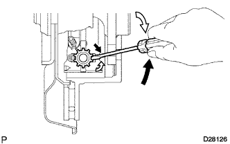

PARKING BRAKE SYSTEM > ADJUSTMENT |
| 1. INSPECT PARKING BRAKE PEDAL TRAVEL |
Fully depress the parking brake pedal to engage the parking brake.
Depress the pedal again to disengage the parking brake.
Slowly depress the parking brake pedal using the specified force and count the number of clicks.
| 2. REMOVE REAR WHEEL |
| 3. ADJUST PARKING BRAKE SHOE CLEARANCE AND PARKING BRAKE PEDAL TRAVEL |
Remove the lower instrument panel finish panel sub-assembly (Click here).
Completely release the parking brake pedal.
 |
Loosen the lock nut and adjusting nut to completely release the parking brake cable.
Temporarily install the hub nuts to the hub bolts.
|  |
Turn the shoe adjuster so that it expands until the disc locks.
 | Shoe Adjuster Contracts |
 | Shoe Adjuster Expands |
Turn the shoe adjuster so that it contracts until the disc can rotate smoothly.
Check that there is no brake drag against the shoe.
 |
Turn the adjusting nut until the parking brake pedal travel is corrected to be within the specified range.
| *1 | Adjusting Nut |
Using a wrench or an equivalent tool, hold the adjusting nut and tighten the lock nut.
Operate the parking brake pedal 3 to 4 times and check the parking brake pedal travel.
Check that there is no brake drag against the shoe.
 |
Additionally, excessive pedal travel can be adjusted on the No. 1 parking brake cable as follows.
Loosen the No. 1 parking brake cable lock nut.
Turn the No. 1 parking brake cable adjustment nut until the parking brake pedal travel is correct.
Tighten the No. 1 parking brake cable lock nut.
Depress and release the parking brake pedal 3 or 4 times. Then check the number of clicks when depressing the pedal.
Remove the hub nuts from the hub bolts.
Install the lower instrument panel finish panel sub-assembly (Click here).
When operating the parking brake lever, check that the brake warning light comes on.
| 4. INSTALL REAR WHEEL |